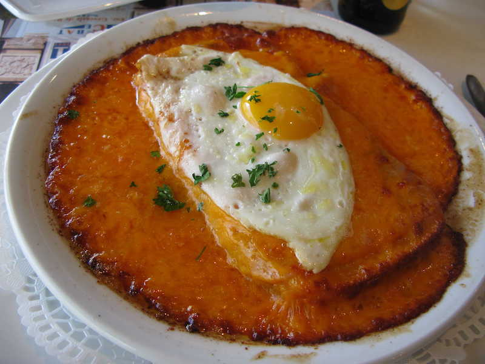

Recette de Welsh
Ingrédients
- 400 g de Cheddar
- 4 tranches de jambon
- 4 cuillères à soupe de bière (ambrée ou brune)
- 25 cl de bière
- 4 à 6 tranches de pain (de campagne ou pain de mie)
- 4 cuillères à soupe de moutarde
- Sel et poivre
- 4 oeufs
Prépration
- Dans une casserole, faites fondre le cheddar mélangé avec la bière et la moutarde. Vous obtiendrez une pâte bien lisse. Assaisonner de sel et poivre.
- Imbiber de 25cl de bière les tranches de pain. Metter vos tranches dans des ramequins individuels.
- Déposer une tranche de jambon au dessus de chaque pain, puis napper abondamment chaque ramequin avec la crème de cheddar qui recouvrera la tranche de jambon.
- Enfourner le tout 10 min au four (180° Th 6).
- Pour les plus gourmands, vous pouvez éventuellement rajouter un oeuf au dessus de la préparation.
